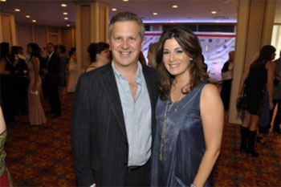
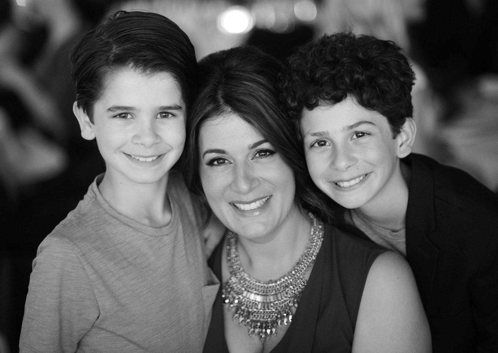

About
Nicole attended York University and graduated with a Bachelor of Fine Arts degree with Honours. She continued her studies in London and Oxford at the prestigious British American Dramatic Academy, an institution that is affiliated with Yale University. Nicole had a dream team of instructors, including Jeremy Irons. Nicole has furthered her education with a Masters of Arts in Communication from Royal Roads University (2011). She is the recipient of both the Founders Award for leadership and sustainability and the Chancellors Award for highest academic achievement.
Nicole has also received recognition for her work outside of the classroom. In 2014, UBCP honoured Nicole as their Woman of the Year in recognition of her outstanding contribution to the Union, the industry, and causes of social justice. She has been nominated by her peers for several Leo Awards for her work on both the small and big screen (Best Lifestyle Host- CRASH TEST MOMMY, 2008 and 2009; Best Supporting Actress in a Feature Film- THE FOURSOME, 2007), and she has received several nominations (Behind the Voice Actors Awards, 2012, 2015) for her vocal perfomances in LITTLEST PET SHOP and THE ADVENTURES OF PACMAN. Recently, Nicole won Best Voice at the UBCP/ACTRA AWARDS for her animation work.
Her mother introduced Nicole to her husband at a screening at the Toronto Film Festival in the late 1990s. It took some time before they met up again at his workplace in Vancouver; however, after commuting between Toronto, Los Angeles and Vancouver for her career, she knew that Chris Ainscough, an award-winning composer in the film/tv industry, was her future. Nicole believes that diversification is the key to success, and that with success in life there can be balance. She resides in Vancouver with her husband and their two sons.